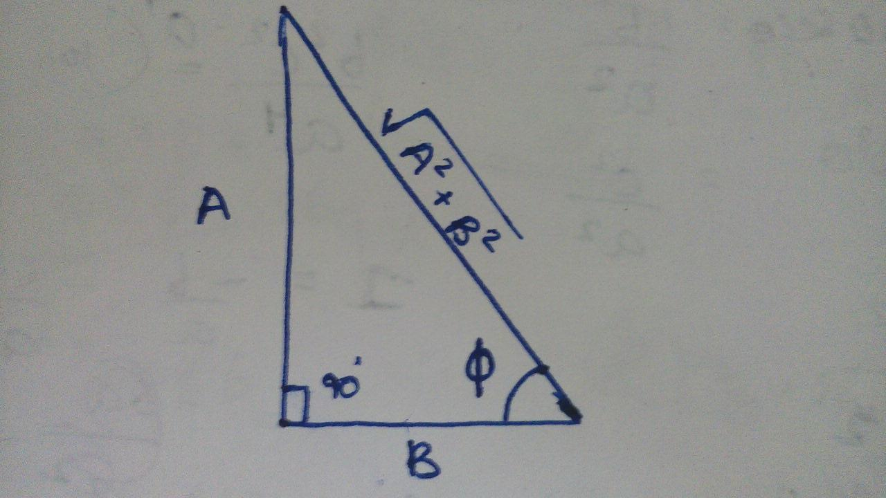

Recap
Hooke's law : \(F = -kx\) or \(a = -w^2x\)
can also be written as, \(\frac{d^2 x}{dt^2} + w^2x = 0\),
where \(w = \sqrt{k \over m}\).
Our objective is to find \(x\) as a function of time \(t\) or \(x(t)\)
Abstract Derivation of General Solution
Given: \(\frac{d^2 x}{dt^2} + w^2x = 0\) (or) \(x'' + w^2x = 0\)
To find: \(x(t)\) for all \(t \ge 0\)
Solution:
Assume that \(x = e^{\lambda t}\) is a solution for our equation*,
By plugging in \(x'' = \lambda^2e^{\lambda t}\) and \(x = e^{\lambda t}\) in our given equation, we get,
\begin{align}
\lambda^2e^{\lambda t} + w^2e^{\lambda t} & = 0 \qquad (1)\\ \\
(\lambda^2 + w^2)e^{\lambda t} & = 0 \qquad (2)\\ \\
\lambda^2 + w^2 & = 0 \qquad (3)\\
\end{align}
By solving \((3)\) we get two solutions for \(\lambda\), where \(i = \sqrt{-1}\)
$$\lambda_1 = +iw \qquad (4)$$
$$\lambda_2 = -iw \qquad (5)$$
Therefore, two possible solutions of our equation is,
$$x_1 = c_1e^{\lambda_1 t} \qquad (6)$$
$$x_2 = c_2e^{\lambda_2 t} \qquad (7)$$
Substituting and adding equations \(4\) to \(7\), we get
$$x(t) = c_1e^{iwt} + c_2e^{-iwt} \qquad (8)$$
Simplifying our General Solution
In this section we will be using a famous relation called euler's formula*,
$$e^{i\theta} = \cos\theta + i\sin\theta \qquad (9)$$
Applying \((9)\) in \((8)\), and some rearranging,
$$x(t) = (c_1 + c_2)\cos(wt) +$$
$$\qquad i(c_1 - c_2)\sin(wt)$$
By grouping the constants, namely with
\(c_1 + c_2 = A\) and \(i(c_1 - c_2) = B\), we get,
$$x(t) = A\cos(\omega t) + B\sin(\omega t)$$
Further we know that*,
$$A\cos\theta\ +\ B\sin\theta\ = $$ $$\sqrt{A^{2}+B^{2}}\sin\left(\theta\ +\ \phi\right) \qquad (10)$$
Where \(\phi\ =\ \tan^{-1}\left(\frac{A}{B}\right)\).
Applying this in our general solution, we get,
$$\mathbf{x(t) = A\sin(\omega t + \phi)} $$
Where, $$\mathbf{A} = \sqrt{A^2+B^2}$$
$$\phi\ =\ \tan^{-1}\left(\frac{A}{B}\right)$$
Proof(Hint) for \(eq(10)\)

$$A\cos \theta + B\sin \theta = $$
$$
\sqrt{A^{2}+B^{2}\ }\left(\frac{A\ }{\sqrt{A^{2}+B^{2}\ }}\cos\theta+\frac{B\ }{\sqrt{A^{2}+B^{2}\ }}\sin\theta\right)
$$